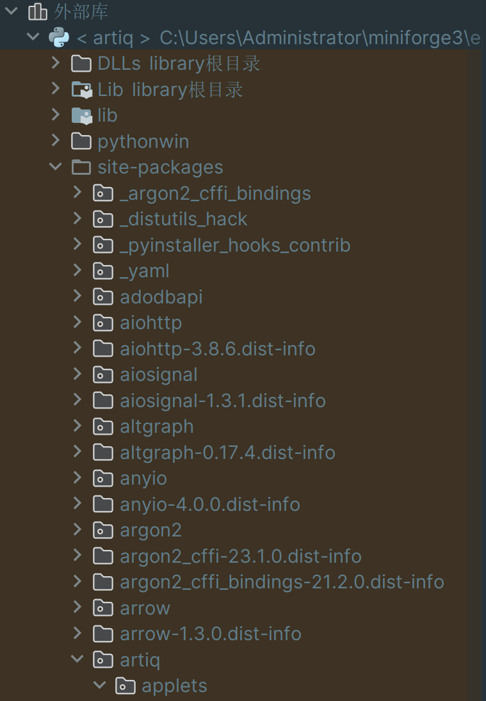
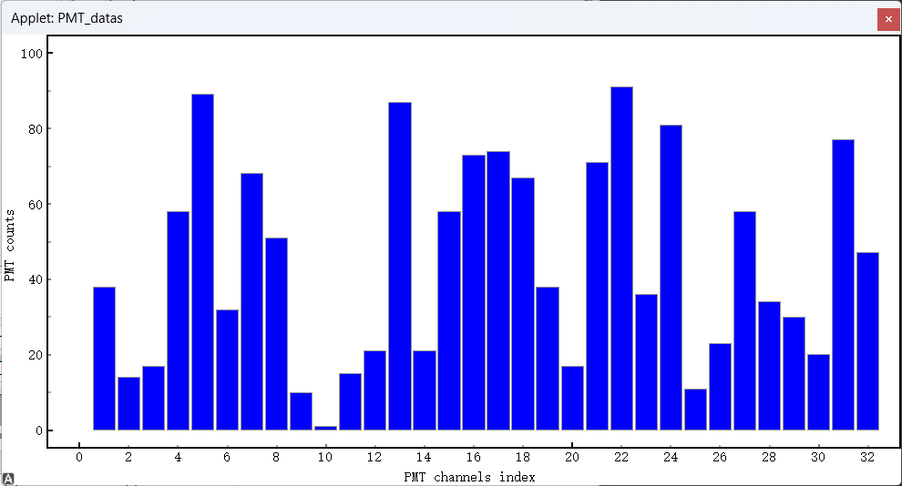
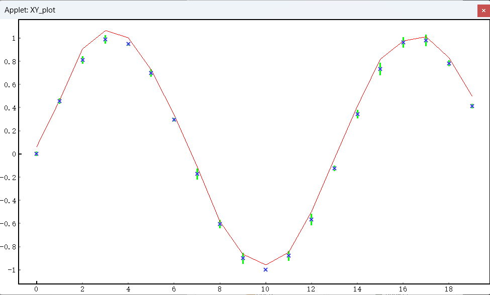

pmt plot and 1d scan plot
Abstract
新增两个模块：
- pmt_plot: 专用于显示 PMT 的直方图
- one_d_scan_plot：一维扫描绘图
对 ARTIQ 自带的 plot_hist 和 plot_xy 优化了 ui，使之更加美观，且方便集成到后续的 PMT 模块中。使用方式上有微调。
在使用这两个模块之前，先将 applets 中的两个模块复制到源码中。
路径示例：
C:\Users\Administrator\miniforge3\envs\artiq\Lib\site-packages\artiq\applets
在 pycharm 中，项目文件栏的外部库里可以方便的索引到该地址。

Example_1: plot_scan
下面是一个简单的示例：
import time
import numpy as np
from artiq.experiment import *
class PMTPlotExample(EnvExperiment):
"""1. UI 优化后的 PMT 面板用法（等于 hist）"""
def build(self):
self.setattr_device("ccb")
self.count = 50
def run(self):
# 1. 建立数据集
self.set_dataset("PMT_counts", np.full(32, np.nan), broadcast=True)
self.set_dataset("X", np.arange(1, 33), broadcast=True) # x 轴数据集要与 y 轴数据集等长
# 2. CCB issue 向主机提交一个协程，用于创建一个新的 applet
self.ccb.issue("create_applet", "PMT_datas", "${artiq_applet}pmt_plot PMT_counts --x X")
# 3. 更新数据集
for i in range(self.count):
data = np.random.randint(0, 100, 32)
self.mutate_dataset("PMT_counts", (0, 32), data)
time.sleep(0.5)
注：
- 生成的 X 轴数据要跟 Y 轴数据形状一致，二者都 shape=（32，）。本模块绘图不采用 hist 那种以边界间填充的模式
- ${artiq_applet} 后，采用的绘图模块修改成了 pmt_plot

Example_2: plot_1d_scan
相较于 plot_xy，修改了UI，使之更加美观，并修改源码以方便后续集成优化
import time
import numpy as np
from artiq.language import EnvExperiment, kernel, rpc, units
class Plot1DScan(EnvExperiment):
"""2. plot_1d_scan 优化了 UI 的一维扫描绘图"""
def build(self):
self.setattr_device("ccb")
self.x = np.linspace(0, 9, 20)
def run(self):
# 1. 建立数据集
self.set_dataset("Y", np.sin(self.x),
broadcast=True)
self.set_dataset("X", np.linspace(0, 9, 20),
broadcast=True)
self.set_dataset("error", np.random.rand(20) * 0.1,
broadcast=True)
self.set_dataset("fit", np.sin(self.x) + np.random.rand(20) * 0.1,
broadcast=True)
# 2. 提交绘图任务
self.ccb.issue("create_applet", "XY_plot", "${artiq_applet}plot_1d_scan Y --x X1 --error error --fit fit")
视图
